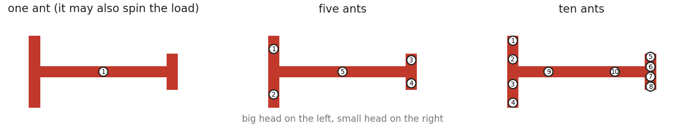
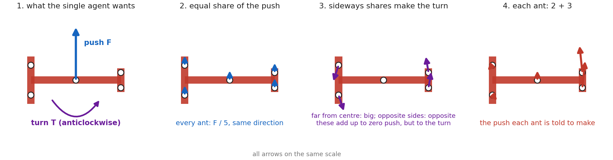
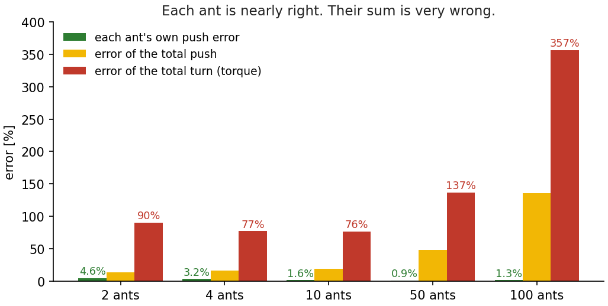
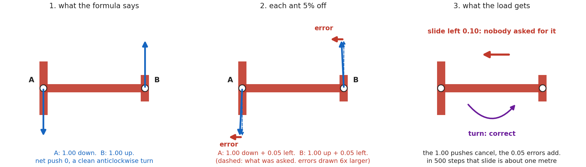
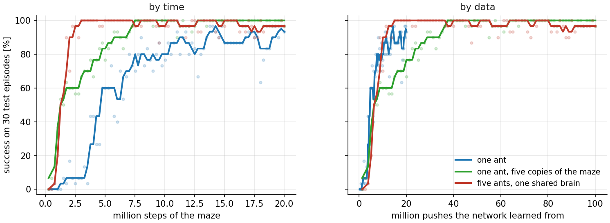
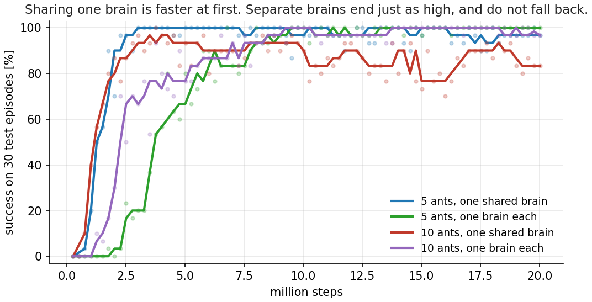
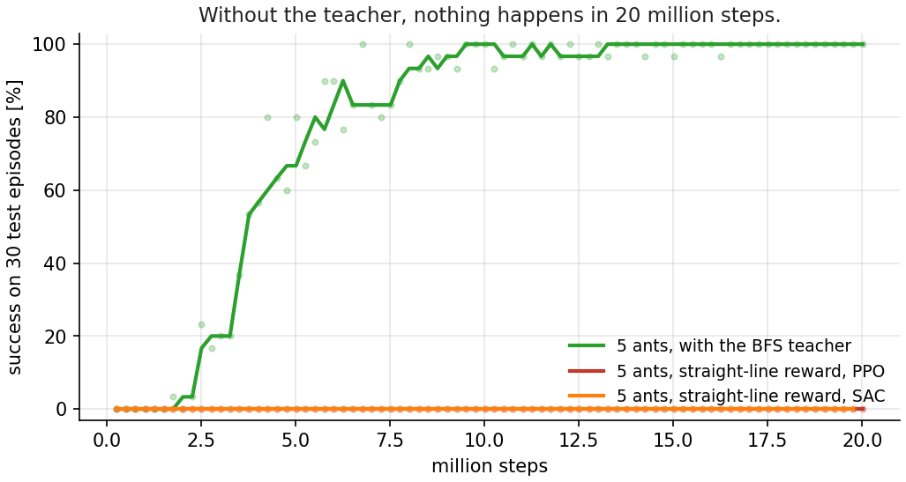

Multi-agent reinforcement learning · part two
Can multiple AI agents solve the piano-movers puzzle together?
In part one, a single agent learned to carry a T-shaped load through two narrow slits. Real ants do it as a group, with no leader and no plan. So I put five, then ten, agents on the load, gave each one only its own small view, and tried to make them learn it together. Five attempts scored zero. This is what I measured, what I fixed, and what surprised me.
This is part two. The puzzle comes from a real experiment with ants. A T-shaped load has to go from one room, through a narrow slit, into a short corridor, and out through a second slit into the goal room. The big head of the T does not fit through a slit straight on. So the load has to go in big head first, tilted, turn inside the corridor, and come out small head first. Real ants do this together, dozens of them, with no leader.
In part one one AI agent learned this maneuver with reinforcement learning. In this post the load is carried by five, then ten, agents. Each one pushes at its own point, sees only its own small view, and never talks to the others. The task is also harder than in part one: the load starts anywhere in the first room, at any angle, and the goal is drawn anywhere in the last room.
The post follows the work in order: five failed attempts, one measurement that explained them, the fixes, and then three results I did not expect.
01Where we left off
In the first post one agent learned to carry a T-shaped load through two narrow slits. It needed a teacher: a map of the maze, flooded backwards from the goal with BFS, that told the agent which way is really forward. With that, it solved the maze every time, big head first, exactly like the ants.
But the ants do not do it alone. Dozens of them hold the load at the same time. No ant is in charge. No ant sees the whole picture. Each one feels only the piece of the load under its own feet. And the research behind the video (Dreyer et al., PNAS 2025) found something strange: ants get better in bigger groups. People get worse.
So the next question was obvious. Can a group of AI agents do the same?
This is where the post ends up. Let me tell you how it got there. It took five failures first.
02What changes with many ants
The maze is the same. The task is harder than in part one, in three ways.
- Random start. In part one the load always started at the same place. Now it starts anywhere in the start room, at any angle.
- Random goal. In part one the goal was one fixed point. Now it is drawn anywhere in the goal room, and the big head has to reach it.
- No curriculum. Part one trained in stages, from easy starts to the real start. Here there are no stages. Every episode is the full task from the first step of training.
The BFS teacher is still there, but only as a reward: a small reward for every step that brings the load closer to the goal along the real route.
A random goal raises one question: a map to where? The map from part one was flooded from one goal. I did not want a new map for every goal. So the reward has two legs. The first leg uses one map, flooded from a fixed point just past the second slit. It is the same for every goal, because every route has to pass that point. Once the whole load is through the second slit, the second leg takes over: plain straight-line distance to the actual goal, which is fine in an open room. The hard part of the maze is learned once, from one map.
And “success” everywhere in this post means: 200 fresh episodes, with start poses and goals the ants never saw in training.
What really changes is who is holding the load.

Each ant holds one fixed point on the T. Every step, every ant chooses a direction and a strength for its push. That is all an ant can do. It cannot turn the load. Only the whole group can turn it, by pushing at different points in different directions.
The one ant in part one was special. It sat in the middle of the load and had an extra “spin” action, because a push from the middle can never turn anything. The swarm has no spin. Every turn has to come from teamwork.
What each ant sees. This is the part I care most about. Each ant gets its own small view: where it holds the load, where the load is, where the goal is, how the load is moving right under its own feet, and how far the tips of the load are from the slit corners. About thirty numbers. Nothing about the other ants. Not even how many there are.
What each ant decides. All ants share one small network. It reads one ant’s view and returns that ant’s push. Run it five times for five ants. Later in the post I give every ant its own network, and we will see what changes.
There is no leader, no plan, no message. The only channel between the ants is the load itself. When one ant pushes, the others feel the load move.
03First check: is it physically possible?
Before training anything, I checked one thing. Can many small pushes even do what one big push did?
For that I needed a single agent that can do this task, with a random start and a random goal. The agent from part one cannot. It knew one start and one goal. So I built a new one, and since it plays the teacher for the rest of this post, here is what it is made of.
- A planner. The BFS map from part one gives every pose of the load a distance to the goal along the real route. A planner that always steps to a lower distance walks the load through the maze. It is not a policy, it is a search, and it needs the map. I ran it from 34,777 random starts to random goals and recorded every step.
- A single-agent brain. A network trained to copy those recordings. Given the load’s pose, its speed and the goal, it outputs one push and one turn for the whole load. It does not need the map any more. On its own it solves 88 to 95% of fresh episodes.
- The formula, which comes next. It takes the brain’s one push and one turn and divides them among N ants.
Brain plus formula is the teacher. I took its push and split it across N ants.
Here is the formula in words. The single agent produces two things each step: a push (a direction and a strength) and a turn. Now N ants have to produce the same push and the same turn together, each one pushing at its own point on the T.
- The push is easy. Give every ant an equal share: the total push divided by N. All ants push the same way, and the shares add up to the total.
- The turn is the interesting part. A push at a point away from the centre also turns the load, like pushing the end of a door. So every ant gets a second, small push, sideways, whose size depends on how far it is from the centre. Ants far from the centre push harder sideways. Ants near the centre barely push sideways at all. Ants on opposite sides push in opposite directions. These sideways pushes add up to zero push, but they add up to the turn.

Each ant’s push is the sum of these two parts. There are many ways to split one push and one turn among N ants. The formula picks the one with the smallest pushes in total, so no ant works harder than it must. It has a closed form, and I checked it against a numerical solver to machine precision.
One thing to notice. To compute its sideways part, an ant needs to know where it is relative to all the other ants. So the formula is centralised. It knows where everyone holds. That is fine for a check, and fine for a teacher at training time. It is not what the ants do.
| Ants | Success |
|---|---|
| 1 | 95% |
| 10 | 95% |
| 50 | 95% |
| 100 | 95% |
Identical, to the last decimal. Even 100 ants can copy the single agent exactly. So the physics is fine. If the swarm fails, it fails at learning.
This check took an hour. It saved me weeks of wondering later.
04Five failures
Then I tried to make the ants learn. I tried five things. All five scored zero.
The first three are imitation. The formula from section 03 knows the right push for every ant in every situation. So I recorded thousands of situations, asked the formula for the right pushes, and trained the ants to copy them. Each ant sees only its own view and has to output its own push.
- Copy the push directly. The network outputs the push itself: a direction and a strength. The simplest possible version.
- Copy two numbers instead. The formula builds every push from two shared parts: a share of the total push, which is the same for every ant, and a share of the total turn, which depends on where the ant holds the load. So the network outputs those two numbers, and the push is computed from them. The idea was that two numbers are easier to learn than a direction and a strength.
- The same, on a log scale. The turn share is tiny for ants near the middle and large for ants at the ends. A plain error measure ignores the tiny ones. A log scale treats a 10% mistake the same whether the value is small or large.
The last two are reinforcement learning. No formula, no copying. The ants try pushes, get a reward, and keep what worked. This is multi-agent PPO: one shared network, one ant’s view in, one ant’s push out, and one reward for the whole team.
- Reward only for success. One point when the load reaches the goal, zero the rest of the time. The same reward that failed for one agent in part one.
- The BFS reward. The teacher’s reward from part one: a small reward every step for moving closer to the goal along the real route. This is what solved the single-agent task.
| Attempt | Kind | Success |
|---|---|---|
| 1. Copy the push directly | imitation | 0% |
| 2. Copy two numbers | imitation | 0% |
| 3. Two numbers, log scale | imitation | 0% |
| 4. PPO, reward only for success | RL | 0% |
| 5. PPO, BFS reward | RL | 0% |
I also tried the curriculum from part one with five ants: start near the goal, move the start back stage by stage. Sixteen stages. The ants mastered the first one and then sat at the second for five million steps. On the real task: zero. So the curriculum does not rescue the swarm either.
The strange thing was the first three. The ants were learning the teacher’s pushes almost perfectly. The training error was tiny. Each ant was one to five percent off. And the load went nowhere.
How can a few percent per ant add up to nothing? The next section is the answer.
05The obstacle, measured
So I stopped training and started measuring. I let the ants push along the teacher’s own route and compared, at every step, what the ants pushed with what the teacher wanted.

Look at the red bars. Each ant is a few percent wrong. The turn they make together is 90% wrong with two ants, and 357% wrong with a hundred.
Here is why. Look back at the split figure. Each ant’s push has two parts: a big part that moves the load, and a small sideways part that turns it. The sideways parts of ants on opposite sides point in opposite directions. As pushes they cancel. As a turn they add up.
An ant’s error is a few percent of its whole push. But the turning part is only a small piece of that push. So a 3% error on the whole push can be a 30% error on the turning part. And when you add the ants up, the turning parts cancel, but the errors do not. Each ant’s error is its own. They pile up.
A two-ant example, with numbers. Two ants at the ends of the T. The formula says: ant A pushes down with 1.00, ant B pushes up with 1.00. Net push zero, and a clean turn. Now each ant is 5% off. A pushes 1.00 down and 0.05 to the left. B pushes 1.00 up and 0.05 to the left. The turn is still right. But the load also slides left with 0.10, which nobody asked for. Over 500 steps that slide is about one metre, in a maze 1.65 m wide. The load misses the slit.

The signal cancels, the noise survives. That is the whole obstacle.
This is not a learning problem in the usual sense. The loss said the ants were good. The load said they were not. Only the load was right.
There was one more thing I measured. Can an ant tell how many others are holding the load? I trained a small probe on one ant’s view. It guessed the group size correctly 93% of the time. The load moves slower with more ants, and the ant can feel that. So the ants have the information. Adding up their pushes is what breaks.
06Three fixes, and the first success
The measurement told me what to fix. It took two rounds.
Round one: a teacher that hands out pushes. The three imitation attempts in section 04 all worked the same way. Let the teacher drive the load through the maze, record what each ant should push at every step, and train the ants to copy it. That is plain behaviour cloning, and it gave zero.
Here is the problem with it. The ants only ever saw the teacher’s own episodes: clean, correct routes. A student that is 3% wrong drifts a little off that route on its first steps. Now it is in a situation the teacher never showed it, so it is more wrong there. It drifts further. After fifty steps it is somewhere the training data never covered, and the load is against a wall. The small error compounds, and no amount of extra teacher episodes fixes it, because the teacher never makes those mistakes.
The fix is called DAgger, and it is simple. Let the students drive. Record the situations they get themselves into, mistakes and all. Then ask the teacher: in each of these situations, what should each ant have pushed? Add those answers to the training data and retrain. Repeat. Every round, the ants get corrections for exactly the situations they actually end up in.
It climbed round by round:
| round | 0 | 2 | 4 | 7 | 10 | 11 | 15 |
|---|---|---|---|---|---|---|---|
| success | 0% | 16% | 46% | 60% | 70% | 84% | 92% |
The teacher itself scores 93% on the same episodes, so at round 15 the students had caught up with it. Two details mattered along the way:
- A short memory. Giving each ant its last four views instead of one made a big difference early: 73% against 43% at round 8. A single view does not show how the load is moving. Four views do.
- Where the ants hold. My first layout had put all five ants on the big head by chance. Spreading them out, two on each head and one in the middle, made the turn much easier and the learning much faster: 82% by round 3 instead of 28%.
That gave the first non-zero result: 91% on 200 fresh episodes. Five ants, each seeing only its own view. A small victory, but a borrowed one. It needed the formula, and the formula needs to know where all the ants are.
My first idea was to improve the 91% with RL. Take the copied policy, keep training it with PPO, let it find what the teacher could not show it. That went badly. Without something holding it near the teacher, PPO took an 87% policy to 0% in a few million steps. With a leash, a penalty for moving away from the teacher’s pushes, it ended at 84%. Lower than where it started. RL on top of a good policy did not add anything here. It only took away.
Round two: pure learning, no formula. I wanted the ants to find the pushes themselves. Looking at what works in the literature on this kind of task, my setup was missing three things:
- A judge that sees everyone. In PPO there is a second network that judges how good a situation is. Mine looked at one ant’s view. That is a judge who cannot see the other players. Now it sees all ants’ views at once. Only the judge is shared. Each ant still acts on its own view.
- Feel the load under your own feet. The ants’ view had the load’s speed at its centre. It did not have the speed at the point where the ant is holding. That is the one thing the ants really communicate through. I added it.
- Thirty workers that were one worker. This one was a bug, and an ugly one. Training ran on thirty parallel copies of the maze. All thirty had the same random seed. So I had one experience copied thirty times. The “too good” training error from section 04 was the tell.
With those three, and nothing else, pure multi-agent RL learned the maze. Five ants, from zero, no formula, no demonstrations.
Not on the first try, though. The first run sat at zero for twelve million steps, then crept up to 30%, and stayed there for another twenty million. I was ready to write “pure RL gets you 30%”. Then I changed one thing, the random seed, and the next run reached 96%. Same code, same settings. I do not have a good explanation. I do have a rule now: never quote a number from one run. More on that at the end.
07A fair fight: one ant against five
Now I could ask the question from the top of the post. Does the group do better than one?
Same maze, same reward, same network size, same random seed, same twenty
million steps of training. The only difference is the ants line
in the config file. One ant in the middle, with its spin. Or five ants,
spread over the T, with no spin.
| Success on 200 fresh episodes | |
|---|---|
| One ant | 88% |
| Five ants | 96% |
The swarm learned faster, and ended higher. Even though the single ant has the easier job, with its spin action.
For about a day I believed the swarm was smarter.
08Why? Data, not teamwork
Here is what I had missed. Five ants share one network. Every step of the maze, that network sees five views and learns from five pushes. The single ant’s network sees one. Same number of steps, five times the data.
So I gave the single ant five times the data too. Each training worker now runs five copies of the maze instead of one. Nothing else changed.

Three runs. Blue: one ant, one maze. Red: five ants, one maze. Green: one ant, five mazes. Higher is better.
Left plot: success against training time. Blue, the plain single ant, is the slowest. Red and green reach the top at about the same time. So one ant with five mazes learns as fast as five ants with one maze.
Right plot: the same three runs, but the x-axis is data. Instead of “how long did it train”, it asks “how many pushes did the network learn from”. A step with five ants gives five pushes, and a step with five mazes also gives five pushes. On this axis all three lines fall on top of each other. Given the same amount of data, one ant and five ants learn at the same speed.
| Success on 200 fresh episodes | |
|---|---|
| One ant, one maze per worker | 88% |
| Five ants, one shared brain | 96% |
| One ant, five mazes per worker | 100% |
100% with the same data With the same amount of data, one ant beats the swarm. The swarm’s advantage was not cooperation. It was five samples per step.
One thing this does not say: that the swarm has no advantage at all. Early in training, at equal data and equal updates, the swarm is still ahead: 93% against 80% after three million steps. Five pushes at five points move the load in more useful ways than one push and a spin. That head start is real. But by the end it is gone.
This is the lesson of the post, if there is one. Before you believe a swarm is smarter, count its samples.
09Ten ants, and one brain per ant
The ants in the PNAS paper get better in bigger groups. Do mine?
I doubled the group to ten ants, four on each head and two on the stem. Same recipe. It started as fast as five ants. Then something new happened. It reached 94%, and slid back down. At the end of training it was at 80%.
Looking inside, the ten ants had learned to push softer and softer, and their pushes had become almost deterministic. Each ant’s share of the turn is smaller with ten ants, and section 05 told us that summed errors grow with the group size. A policy that no longer explores cannot climb back out.
Then I tried the thing I had been curious about since the start. Give every ant its own brain. No shared network. Each ant gets its own network, its own random start, and even a slightly different shape: a little wider or narrower, a different activation function. Five different brains, or ten.

Two things happened.
First, separate brains learn slower. Of course they do. Each brain now sees one view per step instead of five. Section 08 again.
Second, they end just as high, and they do not slide back.
| Swarm | Success on 200 fresh episodes |
|---|---|
| 5 ants, one shared brain | 96% |
| 5 ants, one brain each | 98% |
| 10 ants, one shared brain | 80% (peak 94%) |
| 10 ants, one brain each | 94% |
Ten different networks, that never share a weight and never send a message, carry the load through the maze together. The only thing they have in common is the load under their feet. That was enough.
So do my ants get better in bigger groups, like the real ones? Not yet. Ten is not better than five. But ten is not worse either, once every ant has its own brain. And I did not tune anything for ten.
10The one thing that still matters: the teacher
Every run above used the BFS teacher from part one. Not as a curriculum this time, only as the reward: a small reward for every step that brings the load closer to the goal along the real route.
In part one, one agent without that teacher never passed the second slit. Not with a shaped reward, not with hindsight replay, not with exploration bonuses, not with Go-Explore. I wanted to know: does a swarm change that?
So I took the teacher away. The reward became the plain straight-line distance to the goal, plus the success bonus. Five ants, each with its own brain, twenty million steps. I ran it with PPO. Then I ran it with SAC, with the same two-pool trick from part one that keeps rare successes from being forgotten.

Zero. Both. Not one success in forty million steps. The success pool in the SAC run never received a single episode, because there never was one.
The picture is the same as in part one. The ants bring the load to the first slit and push it into the wall, because that is where the straight line to the goal goes. Nothing ever tells them to turn away and go around.
Five ants do not explore their way through. More pushes at more points do help, but only when there is a signal that says which motion was progress. Without the map, there is none.
11What I learned
Six things, from a month with the swarm.
- A swarm of five or ten ants can solve the maze. Each ant sees only its own small view. No leader, no message, no map at test time, no ant count.
- The five failures were bugs, not algorithms. A judge that saw one player. A view without the load’s motion at the ant’s feet. Thirty workers that were one. Each was measured before it was fixed.
- The swarm’s speed was data, not teamwork. Give one ant the same data and it wins, 100% to 96%.
- Sharing a brain is optional. Ten different brains, no shared weights, cooperate fine. They learn slower and do not collapse.
- The BFS teacher is the one thing nothing replaces. With it, every recipe works. Without it, nothing crosses the second slit. Not one agent, not five, not PPO, not SAC.
- Test on episodes the agent never saw. Several numbers in this post were higher on the training evaluation. 98% became 91%. 100% became 85%. Every number here comes from 200 fresh episodes.
12What stays open
Three things I did not solve.
A new grip. Every swarm was trained with the ants at fixed points on the T. Move the ants to different points, and the success rate is zero. The ants learned the maze for their own grip, not for any grip. Real ants regrip all the time.
Learning without the map. Part one and section 10 of this post say the same thing. Something has to tell the agents that turning away from the goal is progress. I do not know yet how to do that without a map of the maze.
One seed. Every number in this post is one training run. An earlier run of the five-ant swarm, with a different seed, got 30%. The recipe is sensitive. Three seeds per number is the right next step.
Come and play with it
Everything is on GitHub, and it is open:
The environment, the multi-agent trainer, the SAC version with the two pools, the ten-ant config, and the scripts that made every figure in this post.
If you find a way through the maze without a map, or a swarm that gets better with size the way real ants do, I would love to hear about it. Open an issue, or write to me. And if you work on collective behaviour or multi-agent RL, please get in touch.
Cite this post
If this write-up is useful in your work, you can cite it as a blog post:
@misc{kakooee2026antswarm2,
author = {Kakooee, Reza},
title = {Can Multiple {AI} Agents Solve the Piano-Movers Puzzle Together?},
year = {2026},
howpublished = {\url{https://rezakakooee.github.io/ant-swarm-rl/}},
note = {Blog post, part two. Code: \url{https://github.com/RezaKakooee/ant-piano-movers-rl}}
}